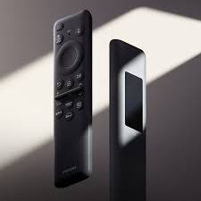
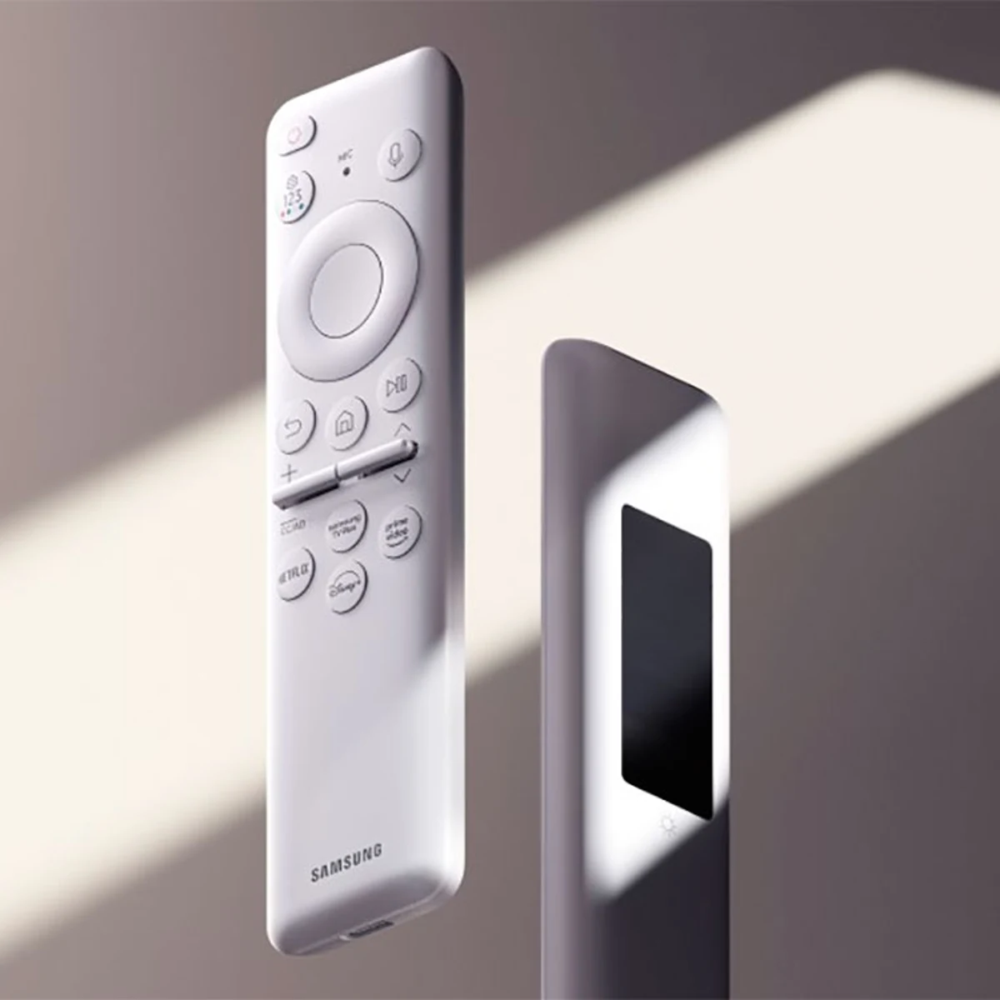
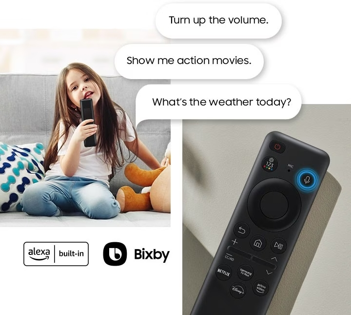

El SolarCell es un mando a distancia de televisión revolucionario que combina tecnología avanzada con un enfoque ecoamigable. Este dispositivo se destaca por su capacidad de carga mediante fuentes de energía sostenible, como la luz solar y las ondas WiFi, lo que lo convierte en una elección inteligente y sostenible para el control de tu televisor.


Asisttentes de voz!!
¿Bixby o Amazon Alexa? Díctale un comando y automaticamente tu asistente de voz lo cumplirá sin la necesidad de clicar botones

FACIL DE EMPAREJAR CON TU TELEVISOR
Enciende el televisor.
Apunta el mando al televisor.
Pulsa y mantén presionado los botones [Atrás] y [Reproducir/Pausar] simultáneamente.
Suelta los botones cuando veas un mensaje en el televisor que indique que el mando se ha conectado.